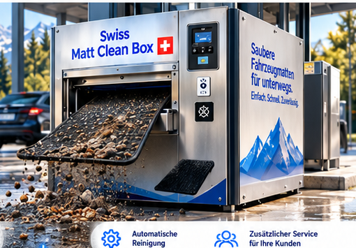
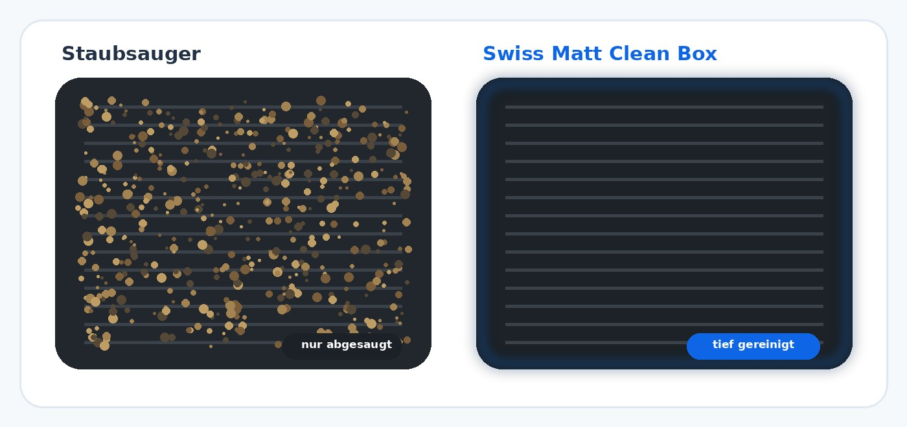

DAS PROBLEM
Saubere Autos – aber schmutzige Matten.
Viele Waschanlagen reinigen das Fahrzeug gründlich, während die Fußmatten häufig nur abgesaugt oder zu Hause nachgereinigt werden. Genau hier entsteht eine sichtbare Service-Lücke.
SAUBER. EINFACH. ÜBERALL.
Die moderne Ergänzung für Waschanlagen, Tankstellen und weitere stark frequentierte Standorte in der Schweiz – unkompliziert, automatisiert und kundenorientiert.

MEHR ALS NUR SAUGEN
Ein Staubsauger entfernt vor allem losen Schmutz. Die Swiss Matt Clean Box kombiniert die automatische Bearbeitung der Matte mit einer intensiveren Reinigung – für sichtbar gepflegtere Fahrzeugmatten.
* Konzept-/Marketingwert. Vor öffentlicher Verwendung bitte mit Herstellerangaben oder eigenem Praxistest belegen.

DAS PROBLEM
Viele Waschanlagen reinigen das Fahrzeug gründlich, während die Fußmatten häufig nur abgesaugt oder zu Hause nachgereinigt werden. Genau hier entsteht eine sichtbare Service-Lücke.
DIE LÖSUNG
Die Swiss Matt Clean Box ergänzt bestehende Standorte um einen zusätzlichen Self-Service. Matte einlegen, Reinigung starten und nach kurzer Zeit sauber wieder entnehmen.
SO FUNKTIONIERT’S
Bargeldlos oder je nach Konfiguration mit weiteren Zahlungsarten.
Fahrzeugmatte bequem in den vorgesehenen Einzug einlegen.
Der Reinigungsvorgang läuft automatisiert und ohne zusätzlichen Personalaufwand.
Die gereinigte Matte entnehmen und direkt wieder ins Fahrzeug legen.
GEEIGNETE STANDORTE
VORTEILE FÜR STANDORTPARTNER
Ein sichtbarer Mehrwert direkt am bestehenden Standort.
Je nach vereinbartem Betriebsmodell kann eine zusätzliche Erlösquelle entstehen.
Der Self-Service-Ablauf ist auf weitgehend automatisierten Betrieb ausgelegt.
Ein moderner Zusatzservice, der den Standort vom Wettbewerb abheben kann.
Pilot- und Betriebsmodelle werden passend zum Standort abgestimmt.
EIN STARKES KONZEPT FÜR DIE SCHWEIZ
Unser Ziel ist ein Netzwerk moderner, automatisierter Mattenreinigung an stark frequentierten Standorten.
INTERESSE AN DER SWISS MATT CLEAN BOX?
Wir besprechen gemeinsam Standort, Pilotmodell und die nächsten Schritte. Die Kontaktaufnahme läuft über Automatic Boxes.